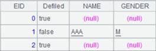

Description:
The introduction of common rules of loop functions.
Syntax:
A.f(x)
Note:
The loop functions compute A(1).f(x),…,A(n).f(x),~=A(i) in proper order against each member or each record of sequence A before performing further processing. "~" in x is used to reference the current record A(i).
Parameters:
|
A |
A sequence or a table sequence |
|
x |
An expression, in which the sing “#” represents the sequence number of the current member/record |
|
f |
A loop function, which includes aggregate functions, locate function, select function, modify function and so on, most of which can be performed on a sequence |
Return value:
The computation of the function f
Example:
|
|
A |
|
|
1 |
=demo.query("select EID,NAME,BIRTHDAY,SALARY,1 as AGE from EMPLOYEE") |
|
|
2 |
=A1.run(AGE=age(BIRTHDAY)) |
Compute the ages of the employees, and assign the results to the AGE field . |
|
3 |
=A1.avg(AGE) |
35.52 |
|
4 |
=create(Num,Accu) |
 |
|
5 |
|
|
|
6 |
>100.run(A4.insert(0,#,A5=A5+#)) |
5050 |